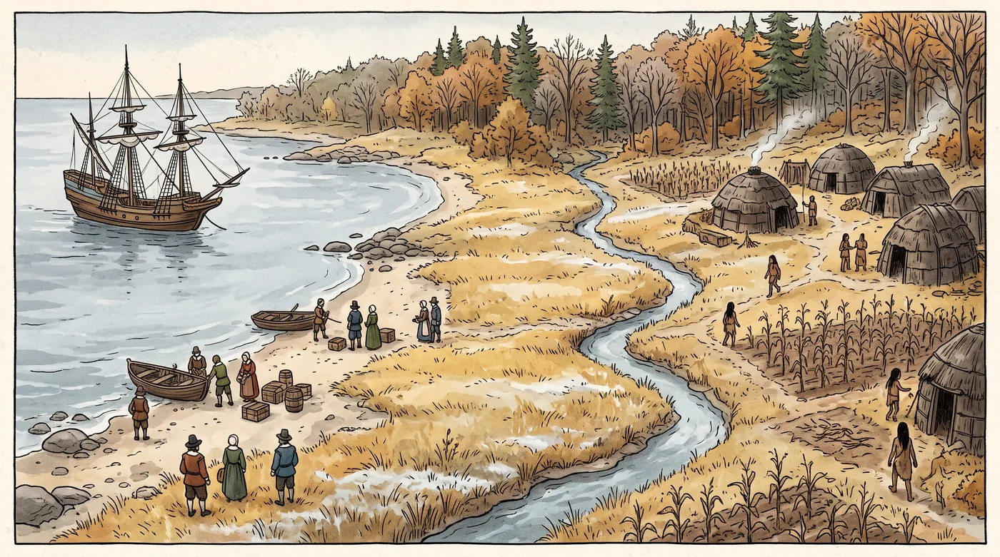
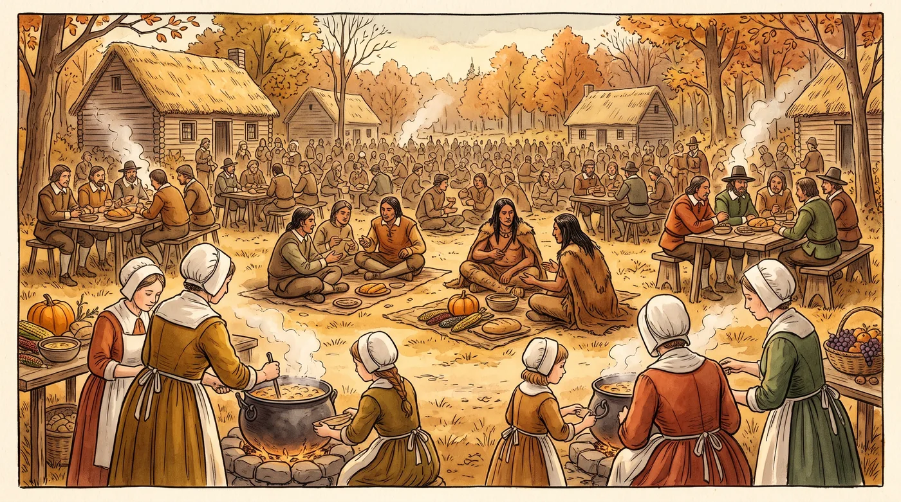
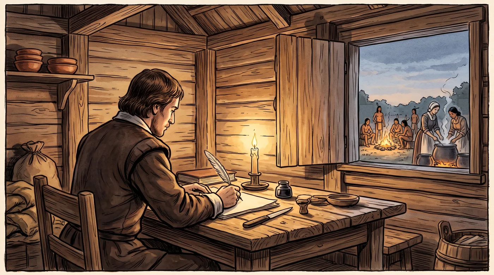
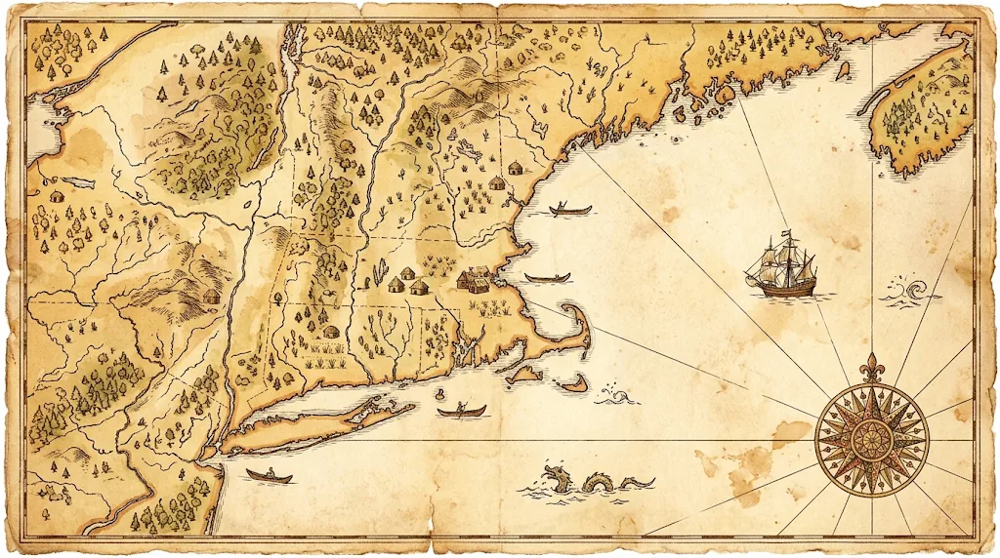
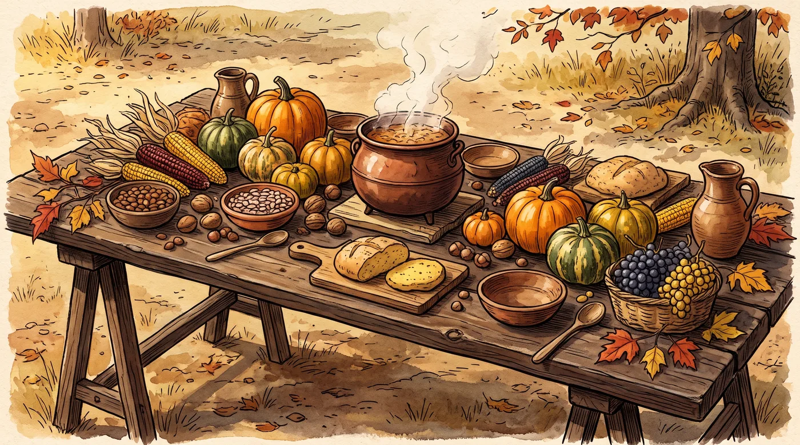

Ti avevo promesso la storia vera del Thanksgiving. L'ho studiata quando ci venne voglia di festeggiare il Ringraziamento, nel 2018. Federico era appena nato, e una festa per cui dire grazie aveva quel non so che. Ma prima di proporre nuove tradizioni volevo sapere bene da dove partivano. E mentre la studiavo mi sono accorta che il problema era un altro.
La storia vera è meno dolce della cartolina. E allora che fai? Tieni la favola che raccontano ancora adesso gli statunitensi, quella dei pellegrini e degli indiani che mangiano il tacchino da buoni amici, sapendo che non è andata proprio a finire così? Oppure la smonti, e guasti la festa a tutti? Pellegrini cattivi, indiani vittime, fine. La seconda sembra più onesta, ma rischia di essere la stessa favola girata al contrario.
Di solito dall'imbarazzo ti tolgono proprio i bambini. Ce n'è sempre uno che alza la testa dal piatto e chiede: "Ma è successo davvero?"
A quella domanda si può rispondere davvero bene. E senza usare le due versioni contrapposte della favola, perché se scegli da che parte stare, il bambino riceve un verdetto già pronto, e non gli resta niente da pensare.
Ti racconto come ho fatto io con i miei tre uragani: ho raccontato persone.

Da una parte gli inglesi: gente scappata da casa, arrivata in un posto che non conosceva. Famiglie, con i bambini al seguito, partite perché in Inghilterra non potevano pregare a modo loro. Più di due mesi di mare, stipati su una nave, e lo sbarco all'inizio dell'inverno, senza una casa pronta. Prima che tornasse la primavera, di loro ne era morta circa la metà. Chi restava aveva fame, e i semi portati da casa in quella terra quasi non crescevano.
Dall'altra i Wampanoag: un popolo che in quel posto ci viveva da sempre, e che doveva decidere se fidarsi. Avevano villaggi, campi coltivati, feste del raccolto tutte loro. Le navi europee le conoscevano già, e non per belle ragioni: qualcuna si era portata via della gente per venderla come schiava. Poi, pochi anni prima, dalle stesse navi era scesa una malattia che nei loro villaggi aveva ucciso la gran parte delle persone. Uno dei rapiti, quando riuscì a tornare, trovò il suo villaggio vuoto: erano morti tutti. I coloni inglesi le case le costruirono proprio lì. Fidarsi dei nuovi arrivati non era per niente scontato. Lo fecero perché, ridotti così, un alleato serviva anche a loro.
A quel tavolo nessuno era seduto per fare bella figura in una recita.
A ogni età il suo pezzo
La storia è una sola, ma non si dà tutta insieme. Si adatta il linguaggio al bambino che hai davanti.
A un bambino piccolo basta poco, purché sia vero. "Tanto tempo fa due popoli molto diversi mangiarono insieme per tre giorni, perché avevano bisogno l'uno dell'altro. Poi tra loro le cose andarono male, e per questo quel giorno per qualcuno è una festa e per qualcuno è un giorno triste." Basta così. È tutto vero e non toglie il sonno a nessuno.
Verso gli otto, nove anni entra in scena il detective, e qui ci si diverte. Gli dici che di quel pranzo ci è rimasta una lettera sola, scritta da uno dei coloni inglesi, lunga poche righe. Dentro ci trova novanta ospiti wampanoag, tre giorni di festa e cinque cervi portati da loro. Il tacchino non lo trova. La parola "ringraziamento" nemmeno. A quell'età scoprire che i grandi hanno raccontato una cosa imprecisa piace da matti. Poi gli dai la notizia che lo spiazza: tra gli inglesi, quel giorno, le donne adulte erano quattro. Quattro donne e qualche ragazza, per più di cento persone e tre giorni di festa. Se c'erano anche le donne wampanoag, nessuno l'ha scritto.

A undici, dodici anni si può dare tutto. Che pochi anni prima una malattia arrivata con le navi europee aveva ucciso la gran parte dei Wampanoag. Che anche gli inglesi, in un inverno, avevano perso quasi metà dei compagni. Che quel pranzo veniva dopo un patto di difesa: due gruppi malconci che si servivano a vicenda, più che due amici. Che la festa nazionale è nata più di due secoli dopo, nel mezzo di una guerra civile, quando al paese serviva un giorno per stare insieme: per mettere da parte per un giorno battaglie e rancori, e trovare una scusa per radunarsi e fare squadra. E che dal 1970, proprio nella città di quel pranzo, ci sono nativi che ogni anno passano quel giovedì su una collina, e lo chiamano giorno del lutto. Perché anche l'altra parte della storia viene ricordata, da chi ne ha sofferto.
A quel punto arriva la domanda grossa: si può festeggiare una cosa sapendo anche il suo lato scuro? La risposta non va suggerita. Io la mia ce l'ho, ma a tavola me la tengo.
Tre domande da tenere in tasca
Vanno bene per questa storia e per tutte le altre. Si fanno, e poi si aspetta: la risposta la deve cercare il bambino.
Chi ci racconta questa storia? Qual era il suo punto di vista? Qui un colono inglese, che scrive una lettera a un amico rimasto in Inghilterra. Quella lettera finì stampata in un libretto che doveva far sapere a casa quanto si stava bene laggiù. Nella cartolina che mandi dal mare racconti agli amici dei tuffi in acqua, mica la scottatura.

Quale punto di vista non è arrivato fino a noi? Quello dei novanta Wampanoag, prima di tutto. Sappiamo quanti erano e cosa portarono. Cosa pensassero, no. E mancano le donne: in quelle righe non compaiono. Tre giorni di festa per tutta quella gente, e nessuno ha scritto chi ha cucinato. Fai notare questo a un bambino e guarda che faccia fa.
E quando un Wampanoag ha voluto dire la sua? Per i trecentocinquant'anni dello sbarco ne invitarono uno a parlare. Chiesero di leggere il discorso prima. Gli dissero che così non andava. Lui a quella cerimonia non parlò. Il discorso lo fece lo stesso, il giorno del Thanksgiving, su una collina. Quella del giorno del lutto: è cominciato così.
E dopo, cosa è successo? È la domanda che le favole non si fanno mai, perché finiscono al dolce. La storia invece va avanti. La pace tra inglesi e Wampanoag durò finché visse il capo wampanoag che l'aveva voluta. I suoi figli andarono dai coloni a chiedere dei nomi inglesi, e uno diventò Filippo. Quindici anni dopo fu proprio lui a guidare la guerra contro gli inglesi. Il figlio dell'ospite d'onore, contro i figli di chi l'aveva avuto a tavola. Non serve dire di più. Serve che il bambino sappia che un dopo c'è stato.
Queste tre domande escono dal Thanksgiving e non si fermano più. Funzionano col libro di storia: chi l'ha scritto, questo capitolo? Funzionano col telegiornale: chi parla, e chi non è stato intervistato? E funzionano con due fratelli che litigano e raccontano ognuno la sua. Lì la terza domanda si gira al contrario e diventa "e prima, cos'era successo?". Di solito risolve il caso.
Un bambino con queste domande in tasca è più difficile da imbrogliare. Anche da te, ti avviso.
Le parole giuste
Sulle parole cerco di essere più precisa possibile: voglio che siano vere, perché sono importanti. Una malattia che uccide un popolo si chiama epidemia, e non "un periodo difficile". Un patto fatto per bisogno si chiama patto, e non "amicizia". E un popolo si chiama col suo nome: Wampanoag. "Gli indiani" lasciamolo ai film.
I Wampanoag ci sono ancora. Vivono lì, nella loro terra. Con i bambini conviene parlarne al presente.

E anche i nomi belli hanno una storia. "Pellegrini" è un nome che a quegli inglesi è stato dato dopo. E "primo Ringraziamento" quel pranzo lo è diventato due secoli più tardi, quando qualcuno ripubblicò la lettera e glielo scrisse sotto, in una nota. I nomi alle cose, spesso, li mette chi arriva dopo.
C'è una parola giusta che ai grandi costa: "non si sa". I novanta Wampanoag erano stati invitati, o passavano di lì? Gli storici ne discutono ancora. Dirlo non è una figuraccia. Il bambino impara che una storia vera ha dei buchi, e che i buchi non si riempiono inventando.
Preciso però non vuol dire pesante. La cosa vera si dice in una frase, poi ci si ferma. Se vuole sapere di più, chiede. I dettagli non servono, e la voce grave nemmeno.
E la festa?
La festa resta. Sapere com'è andata non obbliga nessuno a sparecchiare.
Io con le feste degli altri faccio tre mucchi. Tengo quello che mi servirebbe anche se quel giorno non esistesse: la scorsa volta te ne ho raccontate cinque. Lascio la scenografia, e la favola. Cambio tutto il resto. Il giorno, se quel giovedì non si riesce ad organizzare. Il menu, che può benissimo parlare italiano.

E quest'anno a tavola, tra un piatto e l'altro, c'è anche la storia vera.
E tu? Di una festa che non è la tua, cosa terresti, cosa lasceresti, cosa cambieresti?